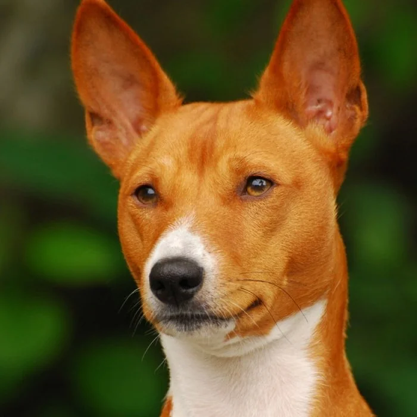

About Basenji Clothing
Basenji Clothing is a streetwear brand inspired by the bold, independent spirit of the Basenji dog. We blend minimal design with striking details to create apparel that stands out in any crowd. Our mission is to empower you to express your unique style with confidence and comfort.
Founded in 2025 by Sabelo, Basenji Clothing is committed to quality, sustainability, and originality. Every piece is crafted with care, using premium materials and ethical practices. Join our community and elevate your street style with Basenji.
what is a Basenji?

The Basenji is a unique dog breed, often called the "barkless dog" because they don't bark like other breeds, but instead make a yodeling sound